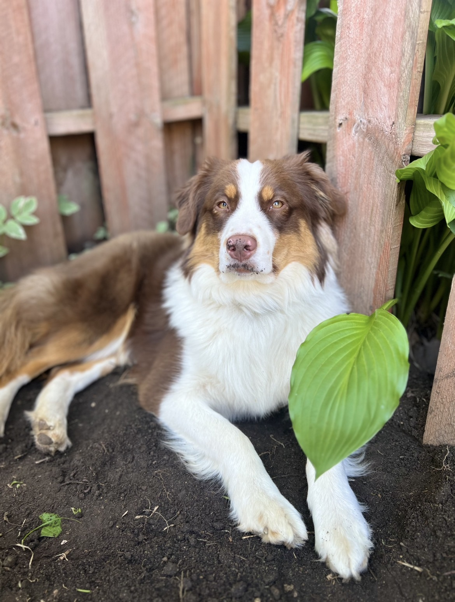

Minneapolis, MN
Loading…
Fetching Minneapolis weather
Hi, I’m Angie.
Designing accessible, user-centered products that help people feel confident and supported.
About
I bring clarity and simplicity to complex problems through research, empathy, and visual and interactive design patterns. I desire to build intuitive, inclusive experiences that feel effortless for everyone who uses them. And to every project, I try to bring some GIFs and fun.
Born and raised in northern Minnesota where the mosquitos are the size of moths and winter lasts half the year taught me to appreciate that one 75 degree, sunny day with no rain, wind, or bugs that you get every 5 years in May.
Selected work
Improved onboarding and accessibility for a health product, increasing user confidence and reducing task completion time.
Created a clear, searchable interface that helped teams find answers faster and lowered support ticket volume.
Built a mobile-friendly checkout flow with polished microcopy and accessible forms that reduced abandonment.
Process
Understand people, goals, and context through research, stakeholder workshops, and empathy mapping.
Create wireframes, prototypes, and content-first layouts that prioritize ease of use and clarity.
Test with real users, iterate based on feedback, and refine solutions for accessibility and delight.
Dog Tax
When I'm not designing for humans, I’m hanging out with my dogs, Nelson and Neal, the best creative collaborators and unofficial office morale boosters.

Nelson is a 5-year-old Miniature American Shepherd who is a working man as a therapy dog. You can meet him at MSP airport sometime when he's working. He also loves to play fetch, eat food, steal the butter off the counter, and play barn hunt.

Neal is a 1-year-old Miniature American Shepherd and anything but a therapist, but actually requiring more therapy for his mom. He's a wild man who will greet you with a jump all the way up to your face and a loud bark of excitement. He won first place in his very first barn hunt trial and clocks in at nearly 25mph in FastCAT.
Contact
If you’re looking for a UX designer who values accessibility, empathy, and polished execution, I’d love to connect.
Email: hello@angiedesign.com